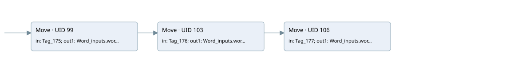

main
main · 검색 색인 순서 4 · 원본 내부 NID 추정 2
백업 PLF 원본의 3188618 바이트 위치에서 복원한 XML. 검색 문서 1615의 객체 키 16102200a46b000000000000와 연결했다. 이름 해석 6/6개. 남은 RefId는 상수 또는 미해석 참조다.
연결 구조 다시 그리기
원본 Part/PCon/Wire를 이용한 연결도다. TIA 화면의 래더 배치 또는 실행 결과를 재현한 그림은 아니다. 핀 연결은 아래 표와 원본 XML을 기준으로 읽는다. 노드 위에 마우스를 두면 피연산자 이름을 볼 수 있다.

접점·코일·블록과 피연산자
| Part UID | Gate | Negated 핀 | 연결 피연산자 |
|---|---|---|---|
| 99 | Move | in = Tag_175; out1 = Word_inputs.word5 | |
| 103 | Move | in = Tag_176; out1 = Word_inputs.word6 | |
| 106 | Move | in = Tag_177; out1 = Word_inputs.word7 |
접점 경로를 펼친 조건식
Contact·O/A·비교기의 원본 연결을 읽기 쉽게 펼친 보조 해석이다. POWER는 전원 레일 시작을 뜻한다. 호출 블록·에지·타이머의 내부 동작과 다중 쓰기 순서는 이 표로 실행 검증하지 않았다. 미해석 핀과 RefId는 원문 연결표에서 확인한다.
| UID | 동작 | 대상 | 원본 접점 경로 | 내용 |
|---|---|---|---|---|
| 99 | Move | Word_inputs.word5 | POWER | Move 입력 Tag_175 |
| 103 | Move | Word_inputs.word6 | Move UID 99.eno (블록 동작 확인) | Move 입력 Tag_176 |
| 106 | Move | Word_inputs.word7 | Move UID 103.eno (블록 동작 확인) | Move 입력 Tag_177 |
원본 배선 연결
| Wire UID | 동일 Wire 연결 끝점 |
|---|---|
| 117 | ORef 109 (Tag_175) ↔ Part 99.in |
| 118 | Part 99.out1 ↔ ORef 110 (Word_inputs.word5) |
| 119 | Part 99.eno ↔ Part 103.en |
| 120 | ORef 111 (Tag_176) ↔ Part 103.in |
| 121 | Part 103.out1 ↔ ORef 112 (Word_inputs.word6) |
| 122 | Part 103.eno ↔ Part 106.en |
| 123 | ORef 113 (Tag_177) ↔ Part 106.in |
| 124 | Part 106.out1 ↔ ORef 114 (Word_inputs.word7) |
| 125 | Powerrail {} ↔ Part 99.en |
식별자 해석 근거 6개
| ORef UID | RefId | 이름 | IdentXmlPart 파일 | 해석 방법 |
|---|---|---|---|---|
| 109 | 13 | Tag_175 | 0692-IdentXmlPart.xml | UID/RID + search-text + NID agreement |
| 110 | 14 | Word_inputs.word5 | 0690-IdentXmlPart.xml | UID/RID + search-text + NID agreement |
| 111 | 16 | Tag_176 | 0692-IdentXmlPart.xml | UID/RID + search-text + NID agreement |
| 112 | 17 | Word_inputs.word6 | 0690-IdentXmlPart.xml | UID/RID + search-text + NID agreement |
| 113 | 19 | Tag_177 | 0692-IdentXmlPart.xml | UID/RID + search-text + NID agreement |
| 114 | 20 | Word_inputs.word7 | 0690-IdentXmlPart.xml | UID/RID + search-text + NID agreement |
검색 코드 보조 자료
참조 명칭을 찾기 위한 자료이며 실행 순서나 AND/OR 관계는 위 연결표로 확인한다.
move "tag_175" move "tag_176" move "tag_177" "word_inputs".word5 "word_inputs".word6 "word_inputs".word7